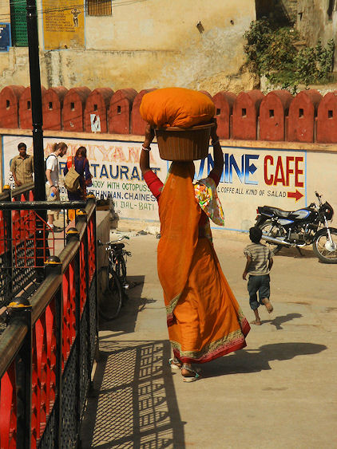
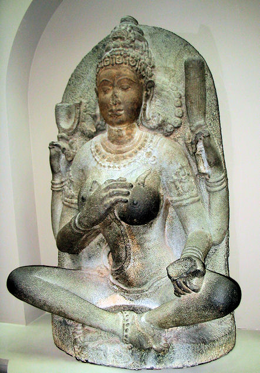

mailto:payer@payer.de
Zitierweise | cite as:
Payer, Alois <1944 - >: Sanskritkurs. -- 33. Lektion 33. -- Fassung vom 2009-01-06. -- URL: http://www.payer.de/sanskritkurs/lektion33.htm
Erstmals hier publiziert: 2008-12-27
Überarbeitungen: 2009-01-06 [Verbesserungen]
Anlass: Lehrveranstaltungen 1980 - 1984
©opyright: Dieser Text steht der Allgemeinheit zur Verfügung. Eine Verwertung in Publikationen, die über übliche Zitate hinausgeht, bedarf der ausdrücklichen Genehmigung des Verfassers
Dieser Text ist Teil der Abteilung Sanskrit von Tüpfli's Global Village Library
Falls Sie die diakritischen Zeichen nicht dargestellt bekommen, installieren Sie eine Schrift mit Diakritika wie z.B. Tahoma.
Die Devanāgarī-Zeichen sind in Unicode kodiert. Sie benötigen also eine Unicode-Devanāgarī-Schrift.
werden mittels Reduplikation gebildet. Der Teil einer reduplizierten Form, der vor die Wurzel gesetzt wird, heißt Reduplikationssilbe.
Die Reduplikationssilbe besteht aus (einem Konsonanten und) einem Vokal.
| 1. Gewöhnlich: Wiederholung des ersten Konsonanten der Wurzel |
Beispiele:
दा 3 "geben"
3.sg.P.Ind.Präs. ददाति
पॄ 3 "füllen"
3.sg.P.Ind.Präs. पिपर्ति
मा 3Ā "messen"
3.sg.Ā.Ind.Präs. मिमीते
| 2. Ein aspirierter
Anfangskonsonant einer Wurzel wird durch den entsprechenden
|
Beispiele:
धा 3 "setzen"
3.sg.P.Ind.Präs. दधाति
भी 3 "fürchten"
3.sg.P.Ind.Präs. बिभेति
3. Ein Guttural
wird durch den ihm entsprechenden
ह् wird immer durch ज् redupliziert. |
Beispiele:
हु 3 "(zum Opfer) ins Feuer gießen"
3.sg.P.Ind.Präs. जुहोति
| 4. Beginnt eine Wurzel mit mehreren Konsonanten, so wird nur der erste (gegebenenfalls unter Anwendung von Regel 2 bzw. 3) wiederholt. |
| 5. Beginnt eine Wurzel mit einer Konsonantengruppe Zischlaut + tonloser Konsonant, so wird nicht der Zischlaut, sondern der darauf folgende tonlose Konsonant gemäß obigen Regeln redupliziert. |
Beispiel:
स्था 1 "stehen"
3.sg.P.Ind.Präs. तिष्ठति
| Bildung: starker Stamm: reduplizierte hochstufige Wurzel + Endung schwacher Stamm: reduplizierte tiefstufige Wurzel + Endung Für den Reduplikationskonsonanten gelten die oben gegebenen Regeln |
|
Beispiele:
हु 3P "(zum Opfer) ins Feuer gießen"
- starker Stamm: जुहो
- schwacher Stamm: जुहु
3.sg.P 3.pl.P 3.sg.Ā 3.pl.Ā Indikativ Präsens जुहोति जुह्वति
juhu + ati<जुहुते> <जुह्वते>
juhu + ateImperfekt अजुहोत्
a-juho-tजुहवुर्
a-juho + ur<अजुहुत> <अजुह्वत>
a-juhu + ataOptativ जुहुयात्
juhu-yā-tजुहुयुर्
juhu-y-ur<जुह्वीत>
juhu + ī-ta<जुह्वीरन्>
juhu + ī-ran
ā kann
Die beiden wichtigsten Ablautreihen der ā-Gruppe sind:
A.
|
Hierher gehört z.B. auch:
स्था् 1
PPP स्थित (sthi-ta)
3.sg.P.Fut. स्थास्यति (sthā-sya-ti)
B.
|
| Wurzeln auf -ā (außer दा und धा) lauten im schwachen Stamm gewöhnlich auf -ī- ab (siehe dazu Thumb-Hauschild Bd. 1,1 S. 271. Vermutlich wirkte dabei die oben genannte Ablautreihe B als Vorbild, obwohl diese Wurzeln sonst nach Reihe A ablauten), vor vokalischen Endungen verschwindet der Wurzelvokal vollständig (siehe Ablautreihe A). |
Beispiele:
मा 3Ā "messen"
3.sg.Ā 3.pl.Ā Indikativ Präsens मिमीते
mimī-teमिमते
mim-ateImperfekt अमिमीत अमिमत Optativ मिमीत
mim-ī-ta !मिमीरन्
mim-ī-ranहा 3P "verlassen"
3.sg.P 3.pl.P Indikativ Präsens जहाति जहति
jah-atiImperfekt अजहात् अजहुर् Optativ जह्यात्
jah-yā-t
Die Wurzel हा hat vor dem Optativ-yā/y die gleiche Form wie vor Vokalen!जह्युर्
jah-y-ur
| Die Wurzeln दा und धा reduplizieren mit
dem Vokal -a- und verlieren im schwachen Stamm den Wurzelvokal. Beachten Sie bei धा das hauchdissimilationsgesetz! |
धा 3U "setzen, festsetzen, zuteilen"
3.sg.P 3.pl.P 3.sg.Ā 3.pl.Ā Indikativ Präsens दधाति दधति
dadh-atiधत्ते
dadh-te
(Erklärung: Thumb-Hauschild 1,1 S. 302f.)दधते
dadh-ateImperfekt अदधात् अदधुर् अधत्त
a + dadh + taअदधत Optativ दध्यात्
dadh-yā-tदध्युर् दधीत
dadh-ī-taदधीरन्
Die Formen von दा erhält man, indem man im Paradigma von धा dh durch d ersetzt. Also:
दा 3U "geben"
3.sg.P 3.pl.P 3.sg.Ā 3.pl.Ā Indikativ Präsens ददाति ददति दत्ते ददते Imperfekt अददात् अददुर् अदत्त अददत Optativ दद्यात् दद्युर् ददीत ददीरन्
| Die Verben der 3. Klasse bilden alle
Formen des Partizip Präsens Parasmaipada vom
schwachen Stamm. Ausnahme: Nominativ/Akkusativ Plural Neutrum kann wahlweise vom starken oder schwachen Stamm gebildet werden. |
Beispiel:
दा Partizip Präsens Parasmaipada:
Maskulinum Neutrum Femininum Singular 1. Nominativ ददत्
dad-at + sददत्
dad-at-Øददती 2. Akkusativ ददतम्
dad-at-amददत् Plural 1. Nominativ ददतस् ददति
das-at-i
ददन्ति
dad-ant-i2. Akkusativ ददतस् ददति
ददन्ति
Ähnlich जुह्वत् (juhu-at + s)
दा 3U ददाति : geben
Fut. दास्यति
Pass. दीयते
Kaus. दापयति
PPP दत्त
Inf. दातुम्davon:
दान n.: Geben, Gabe, Freigebigkeit
Abb.: दानम्
"On August 20th, 2005 in Chennai, India my soon to be in-laws gave us a formal Indian engagement party. It looks like it was a wedding but it wasn't, it's how they do things. Very extravagate. This event was a huge blessing for me. I have never felt so love by another family. I only wish my family could have been there but at least I have a video of the whole thing to share. My soon to be in-laws made the whole thing happen in 3 days. Everything between invitations to a hired photographer. It was fantastic, beyond words can explain the emotions flowing."
[Quelle von Bild und Text: coral11. -- http://www.flickr.com/photos/coral/36326932/. -- Zugriff am 2008-12-26. --
Creative Commons Lizenz (Namensnennung, share alike)]
दा + आ 3Ā अदत्ते : (in Empfang) nehmen, in Besitz nehmen, mitnehmen
Absol. आदाय : mit Akk.: in Begleitung von, mit

Abb.: सा पुत्रमादाय भारं बिभर्ती गच्छति
Udaipur = उदयपुर
[Bildquelle: gscottie8. --
http://www.flickr.com/photos/gscottie/2152543713/. -- Zugriff am 2008-12-27.
--


 Creative
Commons Lizenz (Namensnennung, keine kommerzielle Nutzung, keine Bearbeitung)]
Creative
Commons Lizenz (Namensnennung, keine kommerzielle Nutzung, keine Bearbeitung)]
धा 3U दधाति : setzen, festsetzen, zuteilen
Fut. धास्यति
Pass. धीयते
Kaus. धापयति
PPP हित (!!)
Inf. धातुम्
धा + सम् + आ 3U समादधाति : die ganze Aufmerksamkeit auf etwas richten, sich sammeln
davon:
समाधि m.: innere Sammlung, höchste Aufmerksamkeit

Abb.: समाधि
योगिनी, Kaveripakkam = காவேரிப்பாக்கம், Tamil Nadu, 10. Jhdt. n. Chr.
[Bildquelle: Quadell / Wikipedia.
GNU FDLicense]
पॄ 3P पिपर्ति :füllen erfüllen
Merke:
3.pl.P पिपुरति
3.sg.Impf.P अपिपर् (aus: *apipart)
3.pl.Impf.P अपिपरुर्
3.sg.Opt.P पिपूर्यात्Fut. परिष्यति । परीष्यति
Pass. पूर्यते
Kaus. पूरयति । पारयति
PPP पूर्ण । पूर्त । पूरित
पॄ + सम् nur Pass. सम्पूर्यते und Kaus.: gänzlich füllen
भी 3P बिभेति : sich fürchten vor (Abl., Gen.)
Fut. भेष्यति
Pass. भीयते
Kaus. भाययति
PPP भीत
Inf. भेतुम्davon.
भय n.: Angst Furcht ; Gefahr (also die subjektive und die objektive Seite)
Abb.: भयम्
Mumbai = मुंबई, 2008
[Bildquelle: sameer5678in. --
http://www.flickr.com/photos/guptasameer/3080350405/. -- Zugriff am
2008-12-26. --
 Creative
Commons Lizenz (Namensnennung)]
Creative
Commons Lizenz (Namensnennung)]
भृ 3U बिभर्ति : tragen, bringen ; erhalten, ernähren
Fut. भरिष्यति
Pass. भ्रियते
Kaus. भारयति
PPP भृत
Inf. भर्तुम्davon:
भार m.: Last
मा 3Ā मिमीते : messen
मास्यति । मास्यते
मीयते
मापयति
मित
मातुम्
मा + उप 3Ā उपमिमीते : vergleichen
davon:
उपमा f.: Vergleich
प्रतिमा f.: Abbild
हा 3P जहाति : verlassen
Fut. हास्यति
Pass. हीयते
Kaus. हापयति
PPP हीन : verlassen von, ermangelnd, mangelhaft
Inf. हातुम्von PPP हीन :
हीनयान n.: das mangelhafte Fahrzeug (des Budhismus): verächtliche Bezeichnung durch die Vertreter der "großen Fahrzeugs", des महायान ; der mangelhafte Weg (यान zu या 2: gehen, fahren). Der Ausdruck हीनयान sollte nicht mehr verwendet werden. Die heute noch existierende Form des alten Buddhismus heißt थेरवाद.
Abb.: हीनयानमेव
Thailand
[Bildquelle: grrrrl. --
http://www.flickr.com/photos/11619899@N00/867938692/. -- Zugriff am
2008-12-26. --

 Creative
Commons Lizenz (Namensnennung, keine kommerzielle Nutzung)]
Creative
Commons Lizenz (Namensnennung, keine kommerzielle Nutzung)]
हु 3P जुहोति : ins Feuer gießen (als Opfer, bes. Schmelzbutter)
Fut. होष्यति
Pass. हूयते
Kaus. हावयति
PPP हुत
Inf. होतुम्
Abb.: घृतमग्नौ जुहोति
यज्ञ im Shiva ashram, Kothavala, Ganeshpuri, 80 km von
Mumbai (मुंबई) entfernt
[Bildquelle: Dey. --
http://www.flickr.com/photos/dey/466758922/. -- Zugriff am 2008-12-26. --


 Creative
Commons Lizenz (Namensnennung, keine kommerzielle Nutzung, share alike)]
Creative
Commons Lizenz (Namensnennung, keine kommerzielle Nutzung, share alike)]
घृत n.: Schmelzbutter, Ghee = घी / گھی / ঘী
SAbb.: घृतम्
[Bildquelle: Wikipedia. GNU FDLicense]
"Ghee is made by simmering unsalted butter in a large pot until all water has boiled off and protein has settled to the bottom. The cooked and clarified butter is then spooned off to avoid disturbing the milk solids on the bottom of the pan. Unlike butter, ghee can be stored for extended periods without refrigeration, provided it is kept in an airtight container to prevent oxidation and remains moisture-free. Texture, colour, or taste of ghee depends on the source of the milk from which the butter was made. In India, ghee is usually made with water buffalo's milk as it tends to be whiter than cow's milk." [Quelle: http://en.wikipedia.org/wiki/Ghee. -- Zugriff am 2008-12-26]
A) Setzen Sie in folgendem Satzmuster die entsprechenden Formen der Wörter in der Klammer ein:
रामस् ... (चतुर्थ्येकवचने बहुवचने च) ... अन्नं ददाति । (भिक्षु । अग्नि । शूद्रा । गुनवान्पुत्र । देवान्स्तुवन्कवि । ब्राह्मणी । महान्साधु । धेनु)
B) Setzen Sie die entsprechenden Formen der in Klammern angegebenen Verben im Indikativ Präsens, Imperfekt und Optativ ein:
ब्राह्मनो घृतमग्नौ ... (हु) ॥१॥
बुद्धगता भयान्न ... (भी) ॥२॥
सुगतः कुलम् ... (हा) ॥३॥
दुर्जना भिक्षुभ्यो ऽन्नं न ... (दा) ॥४॥
साधुः कृष्णे मतिम् ... (धा + सम् + आ) ॥५॥
ईश्वरो लोकान् ... जनास्तु न ... (मा) ॥६॥
दासा भारान् ... (भृ) ॥७॥
ब्राह्मणी पात्रं जलेन ... (पॄ) ॥८॥
C) Übersetzen Sie und wandeln Sie Singularsätze in Pluralsätze um und umgekehrt:
योगयुक्तो मतिं दुःखमक्षनयन्त्यां प्रज्ञायां समाधत्ते ॥१॥
यो भिक्षवे दानानि द्द्यात्सो ऽपि दानपुण्यमाददीत ॥२॥
ब्राह्मणा भारं न बिभ्रतीति ब्राह्मणदासो भारं गृहमबिभः ॥३॥
Abb.: पुरुषा भारं न बिभ्रतीति स्त्री भारं गृहमबिभः
Delhi = दहली
/ دہلی
[Bildquelle: Ondrej Jaura. --
http://www.flickr.com/photos/ondrejj/2073900069/. --
Zugriff am 2008-12-27. --


 Creative
Commons Lizenz (Namensnennung, keine kommerzielle Nutzung, keine Bearbeitung)]
Creative
Commons Lizenz (Namensnennung, keine kommerzielle Nutzung, keine Bearbeitung)]
क्षत्रियशूरः पुत्रमादाय योद्धुं कुलमजहात् । स युद्धे शत्रुहतत्वाच्छरीरं हीत्वा पनर्भवमैत् ॥४॥
देवदत्तमपि सुखं दुःखमोक्षेष्टिं न पिपर्ति । सेष्टिः प्रज्ञयैव सम्पूर्यते ॥५॥
यः साधुर्भूतेभ्यो ऽभयं ददाति तस्माद्भूतानि न बिभ्यति स च तेभ्यो न बिभेति ॥६॥
मितमतयो नरकभयात्स्वर्गलोभाच्च पुण्यं कुर्वन्ति पापं च जहति । अमितप्रज्ञाबुद्धा हि नरकेभ्यो न बिभीयुः स्वर्गांश्च न लुभ्येयुः । ते भयं च लोभं चारुन्धन् ॥७॥
Zu Lektion 34